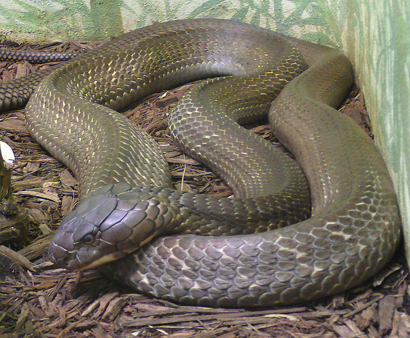
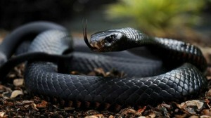
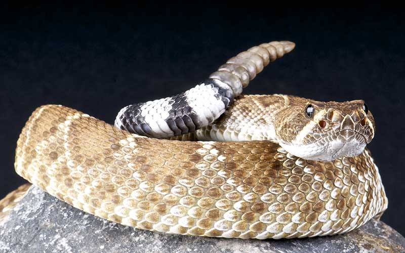

Las serpientes (Serpentes) u ofidios (Ophidia) son un suborden de saurópsidos (reptiles) diápsidos pertenecientes al orden Squamata, superorden de los Lepidosaurios, caracterizado por la ausencia de patas (la pitón mantiene diminutas extremidades vestigiales, herencia de su pasado evolutivo)1 y el cuerpo muy alargado. Se originaron en el período Cretácico.
  